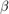
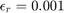

Contents
Homework 4 Student: Daniel Clark
clear all % Instructor: Dr. Ha-Rok Bae close all % Class: ME 7060 Spring 2016 clc format shorte, warning('off')
Problem
The failure event is defined as . Answer the questions below.
Displacement Equation
delta_max = @(P,L,E,I,w) (P.*L.^3)./ (48.*E.*I) + (5*w.*L.^4)./(385.*E.*I);
Constants
L = 30*12; % was ft now in I = 1.33*10^3; % in^4
Always Normal Variables
mu_P = 50*10^3; % was kip now lbs mu_E = 29*10^6; % lb/in^2 sigma_P = 10*10^3; % was kip now lbs sigma_E = 2*10^6; % lb/in^2
Assumed Normal Variable
mu_W = (1/12)*1000; % was kip/ft now lbs/in sigma_W = (0.1/12)*1000; % was kip/ft now lbs/in
Problem 1
Implement your MVFOSM matlab codes and estimate the probability of failure event. (For this question, assume w is a normal variable with a mean of 1 kip/ft and a standard deviation of 0.1 kip/ft.)
MCS
Number_of_runs = 10^6; P_v = mu_P + sigma_P.*icdf('normal',rand(Number_of_runs,1),0,1); E_v = mu_E + sigma_E.*icdf('normal',rand(Number_of_runs,1),0,1); W_v = mu_W + sigma_W.*icdf('normal',rand(Number_of_runs,1),0,1); X = [P_v, E_v, W_v]; [responseVector,~] = LSB(X); pf_true_MCS = sum(responseVector < 0) / Number_of_runs
pf_true_MCS = 1.7800e-01
Solution
X1 = [mu_P, mu_E, mu_W]; [g, gDelta] = LSB(X1); gtil = g + gDelta(1) * (X1(1) - mu_P) + gDelta(2) * (X1(2) - mu_E) ... + gDelta(3) * (X1(3) - mu_W); sigma_g = sqrt( (gDelta(1) * sigma_P)^2 + (gDelta(2) * sigma_E)^2 ... + (gDelta(3) * sigma_W)^2 ); beta = gtil/sigma_g; pf = 1 - cdf('normal',beta,0,1)
pf = 1.7107e-01
Problem 2
Build your Hasofer Lind (HL) Method and estimate the failure probability. (For this question, assume w is a normal variable with a mean of 1 kip/ft and a standard deviation of 0.1 kip/ft.)
Solution
Step A Iteration 1 Set the mean value point as an initial design point and set the required  convergence tolerance to  Compute the limit-state function value and gradients at the mean value point:
betaHistory = []; X1 = [mu_P, mu_E, mu_W]; [g, gDelta] = LSB(X1); gtil = g; % For the first point sigma_g = sqrt( (gDelta(1) * sigma_P)^2 + (gDelta(2) * sigma_E)^2 ... + (gDelta(3) * sigma_W)^2 ); % Step B Compute the initial beta using the mean-value method and its % direction cosine beta = gtil/sigma_g; betaHistory = [betaHistory; beta]; alphaP = -gDelta(1)*sigma_P / sigma_g; alphaE = -gDelta(2)*sigma_E / sigma_g; alphaW = -gDelta(3)*sigma_W / sigma_g; % Step C Compute a new design point 2 X from Equation Xnew = [mu_P+beta*sigma_P*alphaP, mu_E+beta*sigma_E*alphaE,... mu_W+beta*sigma_W*alphaW] U_P = ( Xnew(1) - mu_P ) / sigma_P; U_E = ( Xnew(2) - mu_E ) / sigma_E; U_W = ( Xnew(3) - mu_W ) / sigma_W; beta_previous = 1000; % helps with the loop while (beta_previous - beta) > 0.00000001 % Iteration 2: Step A beta_previous = beta; [g, gDelta] = LSB(Xnew); gtil = g - (gDelta(1)*U_P*sigma_P + gDelta(2)*U_E*sigma_E ... + gDelta(3)*U_W*sigma_W); sigma_g = sqrt( (gDelta(1) * sigma_P)^2 + (gDelta(2) * sigma_E)^2 ... + (gDelta(3) * sigma_W)^2 ); beta = gtil/sigma_g; alphaP = -gDelta(1)*sigma_P / sigma_g; alphaE = -gDelta(2)*sigma_E / sigma_g; alphaW = -gDelta(3)*sigma_W / sigma_g; Xnew = [mu_P+beta*sigma_P*alphaP, mu_E+beta*sigma_E*alphaE,... mu_W+beta*sigma_W*alphaW]; U_P = ( Xnew(1) - mu_P ) / sigma_P; U_E = ( Xnew(2) - mu_E ) / sigma_E; U_W = ( Xnew(3) - mu_W ) / sigma_W; betaHistory = [betaHistory; beta]; end betaHistory pf = 1 - cdf('normal',beta,0,1)
Xnew = 5.8465e+04 2.8198e+07 8.4652e+01 betaHistory = 9.4995e-01 9.2277e-01 9.2284e-01 pf = 1.7805e-01
Problem 3
Build a quadratic regression model of LSF with the 3-level samples within the ranges of ±3? and make an estimation of the failure probability by running MCS with 1 million samples generated from the regression model. (For this question, assume w is a normal variable with a mean of 1 kip/ft and a standard deviation of 0.1 kip/ft.)
Solution
Design = fracfact('a b c'); Design = [Design; 0,0,0]*3; Design(:,1) = Design(:,1)*sigma_P; Design(:,2) = Design(:,2)*sigma_E; Design(:,3) = Design(:,3)*sigma_W; Means = [mu_P*ones(length(Design),1), mu_E*ones(length(Design),1), ... mu_W*ones(length(Design),1)]; Samples = Means + Design; [SampleResponse, ~] = LSB(Samples); Tables = fitlm(Samples,SampleResponse,'purequadratic'); b = table2array(Tables.Coefficients(:,1)); LSF = @(P, E, W) b(1) + b(2).*P + b(3).*E + b(4).*W + ... b(5).*P.^2 + b(6).*E.^2 + b(7).*W.^2; Number_of_runs = 10^6; P_v = mu_P + sigma_P.*icdf('normal',rand(Number_of_runs,1),0,1); E_v = mu_E + sigma_E.*icdf('normal',rand(Number_of_runs,1),0,1); W_v = mu_W + sigma_W.*icdf('normal',rand(Number_of_runs,1),0,1); responseVector = LSF(P_v, E_v, W_v); pf = sum(responseVector < 0) / Number_of_runs
pf = 1.8803e-01
Problem 4
Build your Hasofer Lind – Rackwitz Fiessler (HL-RF) Method and estimate the failure probability. (For this question, assume w is following a lognormal distribution with a mean of 1 kip/ft and a standard deviation of 0.1 kip/ft.)
log Normal
mu_w = 1*10^3/12; % was kip/ft now lbs/in sigma_w = 0.1*10^3/12; % was kip/ft now lbs/in mu_log_w = log((mu_w^2)/sqrt(sigma_w^2+mu_w^2)); sigma_log_w = sqrt(log((sigma_w^2/(mu_w^2))+1)); CDF = @(w) cdf('lognormal', w, mu_log_w, sigma_log_w); PDF = @(w) pdf('lognormal', w, mu_log_w, sigma_log_w);
MCS
Number_of_runs = 10^6; P_v = mu_P + sigma_P.*icdf('normal',rand(Number_of_runs,1),0,1); E_v = mu_E + sigma_E.*icdf('normal',rand(Number_of_runs,1),0,1); W_v = exp(mu_log_w + sigma_log_w.*icdf('normal',rand(Number_of_runs,1),0,1)); X = [P_v, E_v, W_v]; [responseVector,~] = LSB(X); pf_true_MCS = sum(responseVector < 0) / Number_of_runs
pf_true_MCS = 1.7706e-01
Solution
betaHistory = []; sigma_W = pdf('norm',icdf('norm',CDF(mu_W),0,1),0,1)/PDF(mu_W); mu_W = mu_W-icdf('norm',CDF(mu_W),0,1)*sigma_W; X1 = [mu_P, mu_E, mu_W]; [g, gDelta] = LSB(X1); gtil = g; % For the first point sigma_g = sqrt( (gDelta(1) * sigma_P)^2 + (gDelta(2) * sigma_E)^2 ... + (gDelta(3) * sigma_W)^2 ); % Step B Compute the initial beta using the mean-value method and its % direction cosine beta = gtil/sigma_g; betaHistory = [betaHistory; beta]; alphaP = -gDelta(1)*sigma_P / sigma_g; alphaE = -gDelta(2)*sigma_E / sigma_g; alphaW = -gDelta(3)*sigma_W / sigma_g; % Step C Compute a new design point 2 X from Equation Xnew = [mu_P+beta*sigma_P*alphaP, mu_E+beta*sigma_E*alphaE,... mu_W+beta*sigma_W*alphaW]; U_P = ( Xnew(1) - mu_P ) / sigma_P; U_E = ( Xnew(2) - mu_E ) / sigma_E; U_W = ( Xnew(3) - mu_W ) / sigma_W; beta_previous = 1000; % helps with the loop while (beta_previous - beta) > 0.00000001 % Iteration 2: Step A beta_previous = beta; sigma_W = pdf('norm',icdf('norm',CDF(mu_W),0,1),0,1)/PDF(mu_W); mu_W = mu_W-icdf('norm',CDF(mu_W),0,1)*sigma_W; [g, gDelta] = LSB(Xnew); gtil = g - (gDelta(1)*U_P*sigma_P + gDelta(2)*U_E*sigma_E ... + gDelta(3)*U_W*sigma_W); sigma_g = sqrt( (gDelta(1) * sigma_P)^2 + (gDelta(2) * sigma_E)^2 ... + (gDelta(3) * sigma_W)^2 ); beta = gtil/sigma_g; alphaP = -gDelta(1)*sigma_P / sigma_g; alphaE = -gDelta(2)*sigma_E / sigma_g; alphaW = -gDelta(3)*sigma_W / sigma_g; Xnew = [mu_P+beta*sigma_P*alphaP, mu_E+beta*sigma_E*alphaE,... mu_W+beta*sigma_W*alphaW]; U_P = ( Xnew(1) - mu_P ) / sigma_P; U_E = ( Xnew(2) - mu_E ) / sigma_E; U_W = ( Xnew(3) - mu_W ) / sigma_W; betaHistory = [betaHistory; beta]; end betaHistory pf = 1 - cdf('normal',beta,0,1)
betaHistory = 9.5853e-01 9.3088e-01 9.3105e-01 pf = 1.7591e-01